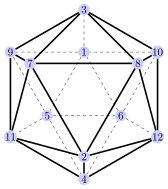
Processo de tomada de decisão
O processo para tomada de decisão baseado na ciência deve ser executado de forma sistemática. Conseguir identificar um problema, desenvolver algum tipo de modelo que o representa, encontrar uma solução (otimizar) e por fim implementar a solução no mundo real são algumas das etapas mais importantes deste processo.
Processo de tomada de decisão
De forma geral, as seguintes etapas sempre são tomadas, seja de forma sistemática ou não.
Processo de tomada de decisão
Formular: nesta etapa o problema é identificado de maneira informal, ou seja, os dados são levantados, requisições e preferências, e mais importante; se é um problema já conhecido (pela comunidade acadêmica) ou não. Sendo um problema conhecido o caminho é muito facilitado.
Processo de tomada de decisão
Modelar: nesta etapa um modelo matemático é desenvolvido para o problema. O modelo sempre é uma simplificação da realidade. Nesta etapa também fazemos a modelagem computacional do problema: como representamos o problema computacionalmente? suas entradas/saídas, estruturas de dados, restrições, etc...
Processo de tomada de decisão
Otimizar: Nesta etapa deve-se encontrar uma solução para o problema. Diversos métodos podem ser usados nessa etapa, e é a maior parte do escopo deste curso. (DICA PARA O MERCADO: A solução não precisa ser a melhor do mundo...somente ser melhor e mais prática do que aquela gerada atualmente pelos gestores.)
Processo de tomada de decisão
Implementar: Com um método de solução satisfatório encontrado em “laboratório”, nesta etapa a solução é adequada para o uso, ou seja, uma interface gráfica é criada, bancos de dados, etc...
Processo de tomada de decisão
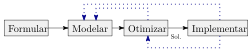
Retomar: Este processo nunca é linear como na imagem, pode ser necessário retomar etapas já executadas.
Modelos clássicos de otimização
A etapa de modelagem é muito importante, é nela que “cercamos” o problema de forma matemática. Existem diversas técnicas para modelarmos um problema.
Modelos clássicos de otimização
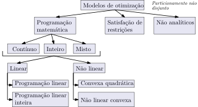
Modelos clássicos de otimização
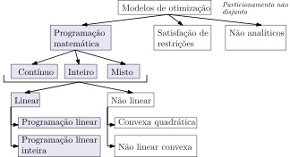
No nosso curso nos concentraremos em modelos de programação matemática lineares e inteiros.
Modelos clássicos de otimização
Um modelo de programação linear (PL) admite valores reais não negativos para as suas variáveis, e assume a forma genérica:
Em que:
- A é uma matriz \(mxn\) chamada matriz dos coeficientes.
- c\(^T\) é o vetor dos custos.
- b\(^T\) é o vetor dos termos independentes ou de recursos.
Modelos clássicos de otimização
Um modelo de programação inteira (PI) admite valores inteiros não negativos para as suas variáveis, e assume a forma genérica:
Em que:
- A é uma matriz \(mxn\) chamada matriz dos coeficientes.
- c\(^T\) é o vetor dos custos.
- b\(^T\) é o vetor dos termos independentes ou de recursos.
Modelos clássicos de otimização
Um modelo de programação inteira mista (PIM) admite tanto valores inteiros quanto reais não negativos para as suas variáveis, e assume a forma genérica:
Em que:
- A é uma matriz \(mxn\) e D uma matriz \(mxp\).
- c\(^T\) é um vetor \(1xn\) e y\(^T\) um vetor \(1xp\).
- b\(^T\) é o vetor dos termos independentes ou de recursos.
Modelos clássicos de otimização
Um modelo de programação binaria (PB) admite somente valores 0 ou 1 para suas variáveis.
Em que:
- A é uma matriz \(mxn\) chamada matriz dos coeficientes.
- c\(^T\) é o vetor dos custos.
- b\(^T\) é o vetor dos termos independentes ou de recursos.
- \(B^n\) representa o espaço dos vetores com \(n\) componentes binárias (0,1).
Modelos clássicos de otimização
EXERCÍCIO: Escreva o modelo de programação matemática para o problema da mochila visto na última aula (capacidade de 150). O problema possui os seguintes parâmetros:
Modelos clássicos de otimização
Sejam as variáveis:
Definição de problemas de otimização
OK..Já vimos diversos de problemas de otimização, e diversos métodos para modelarmos problemas de otimização. Mas afinal,
O QUE SÃO PROBLEMAS DE OTIMIZAÇÃO?
Definição de problemas de otimização
Problema de otimização: Um problema de otimização pode ser definido como um par \((\mathbb{S},f)\) em que \(\mathbb{S}\) representa o conjunto de soluções factíveis e \(f:\mathbb{S}\rightarrow\mathbb{R}\) a função objetivo a ser otimizada. A função objetivo atribui um valor a cada solução \(s\in \mathbb{S}\) indicando a sua importância.
OBSERVAÇÕES:
- O conjunto \(\mathbb{S}\) de soluções factíveis é chamado de espaço de busca (esta definição está ainda incompleta...).
- Não se confunda com as terminologias! Vimos problemas e modelos de otimização, porém não falamos nada sobre métodos (algoritmos) que resolvem estes problemas.
Definição de problemas de otimização
EXERCÍCIO: Considere um TSP com 4 pontos, e a matriz de distâncias abaixo. Este é um problema de otimização? Mostre escrevendo o espaço de busca \(\mathbb{S}\) e a função objetivo \(f\).
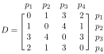
OBSERVAÇÕES: Os elementos da matriz indicam a distância entre os pontos, ou seja: \(d_{ij} = \) distância entre o ponto \(i\) e o ponto \(j\).
Definição de problemas de otimização
Se representarmos uma rota por um vetor numérico em que cada índice representa um ponto (considerando que o último ponto volta ao primeiro), obtemos o seguinte espaço de busca (conjunto \(\mathbb{S}\)):
A função objetivo para algumas soluções fica então:
Definição de problemas de otimização
Definimos formalmente o que é um problema de otimização. Mas qual é o nosso objetivo com esse problema? O que queremos encontrar?
Ótimo global: Uma solução \(s^*\in\mathbb{S}\) é um ótimo global se possui uma função objetivo melhor do que todas as outras soluções do espaço de busca, ou seja, \(f(s^*) \leq f(s) \forall s \in \mathbb{S}\) para um problema de minimização.
De forma que o nosso objetivo é então encontrar a solução que é um ótimo global para o problema de otimização.
Definição de problemas de otimização
Bom...isso é simples, podemos gerar todo o espaço de busca (\(\mathbb{S}\)) de um problema de otimização e avaliar os valores das funções objetivo (\(f\)), selecionando o menor de todos.
Definição de problemas de otimização
Imagine que escrevemos todo o espaço de busca no eixo \(x\) e calculamos os valores de \(f\) em \(y\). Temos um gráfico como mostrado na Figura acima.
Definição de problemas de otimização
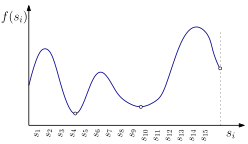
Imagine que escrevemos todo o espaço de busca no eixo \(x\) e calculamos os valores de \(f\) em \(y\). Temos um gráfico como mostrado na Figura acima.
Definição de problemas de otimização
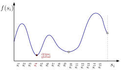
Claramente \(s_4\) é um ótimo global! Pronto, encontramos a melhor solução para o nosso problema.
Definição de problemas de otimização
Por quê então não usamos esta técnica? Gerar todo o espaço de busca e verificar qual a melhor solução? (OBS: esse tipo de estratégia é conhecida como força-bruta, justamente por gerar todo o espaço).
Vamos pensar um pouco...
Definição de problemas de otimização
Quantas rotas são possíveis de serem feitas em um problema do caixeiro-viajante com 3 pontos?
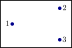 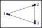 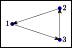
E se nosso problema tivesse 4 pontos? Como no exemplo passado, vimos que 4 pontos geraram um espaço de busca \(\mathbb{S}\) com 6 soluções. Qual a relação que define o número de rotas em função do número de pontos?
Para \(n\) cidades em um problema do caixeiro viajante, existem \((n-1)!\) rotas possíveis.
Definição de problemas de otimização
Se considerarmos um computador capaz de realizar 1 bilhão de somas/segundo. Um problema de 20 cidades precisa de 20 operações de soma para obter o custo de cada rota. Assim, o computador é capaz de analisar:
O número de rotas é:
O tempo necessário para avaliar essas rotas é então:
Definição de problemas de otimização
A Tabela abaixo mostra os tempos de processamento utilizando o algoritmo de força-bruta, em função do número de cidades:
Isso para o problema do caixeiro viajante...imagine os problemas mais complexos de otimização que vimos nas últimas aulas!
Definição de problemas de otimização
Por quê então não usamos esta técnica? Gerar todo o espaço de busca e verificar qual a melhor solução? (OBS: esse tipo de estratégia é conhecida como força-bruta, justamente por gerar todo o espaço).
RESPOSTA: Porquê existe uma explosão combinatória nos problemas, e mesmo com o uso de computadores é inviável usar força-bruta!
Na prática, os algoritmos que resolvem problemas de otimização não geram todo o espaço de busca, apenas um pequeno subconjunto deste. A forma de geração deste subconjunto é o que diferencia os vários métodos de resolução.
Métodos de resolução
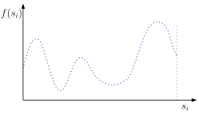
Considerando novamente o espaço de busca.
Métodos de resolução
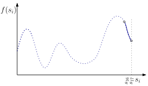
Os métodos de resolução geram um subconjunto do espaço total.
Métodos de resolução
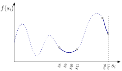
De uma forma inteligente, para tentar encontrar o ótimo global.
Métodos de resolução
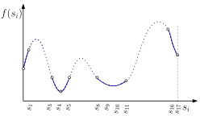
Evitando assim a explosão combinatória gerada pelos algoritmos de força-bruta.
Métodos de resolução
Os métodos de resolução de problemas de otimização são resumidos na árvore acima.
Métodos de resolução
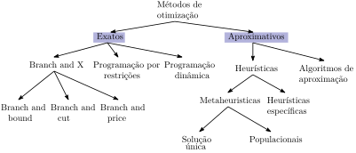
A primeira grande separação nos métodos é em relação ao tipo de solução que eles encontram: o valor da função objetivo é o ótimo global ou não?
Métodos de resolução
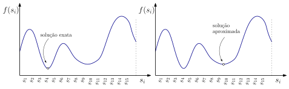
Se o algoritmo garante que o ótimo global é encontrado, ele é considerado exato. Se o ótimo não pode ser garantido ele é considerado aproximativo.
Métodos de resolução
Atenção: um algoritmo aproximativo pode encontrar o ótimo. Só não é garantido matematicamente que ele o fará.
Métodos de resolução
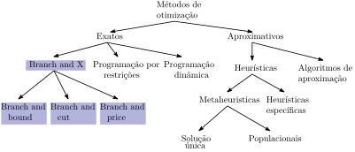
Os métodos exatos baseados em Branching utilizam o algoritmo Simplex como seu motor de otimização.
Métodos de resolução
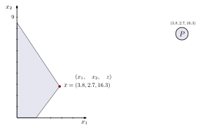
O Simplex é resolvido diversas vezes, e novas restrições são inseridas no modelo.
Métodos de resolução
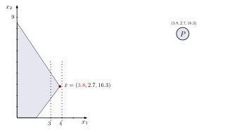
Esse processo é repetido até que uma solução inteira seja encontrada.
Métodos de resolução
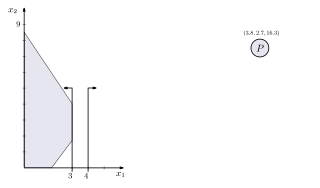
Métodos de resolução
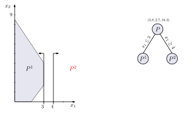
Métodos de resolução
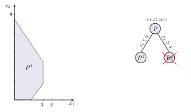
Métodos de resolução
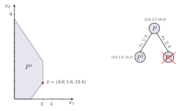
Métodos de resolução
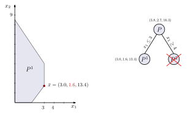
Métodos de resolução
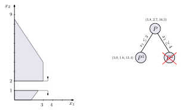
Métodos de resolução
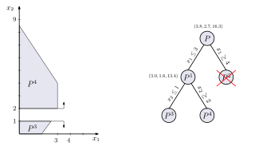
Métodos de resolução
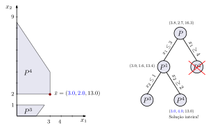
Métodos de resolução
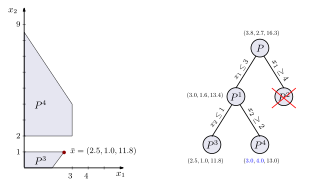
Métodos de resolução
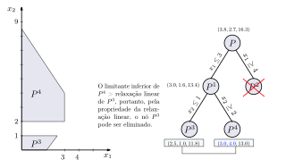
Métodos de resolução
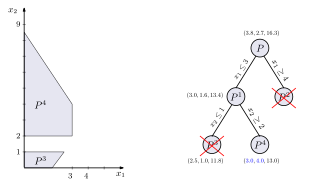
Métodos de resolução
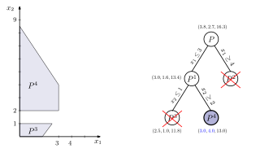
Métodos de resolução
EXERCÍCIO: Encontre a solução ótima do problema da mochila visto nos exercícios anteriores, usando o solver open source GLPK General Linear Programming Kit, por meio da interface GUSEK.
OBSERVAÇÕES:
- Os softwares que implementam algoritmos de otimização (como o Simplex e B&B) são chamados de solvers, como o GLPK. O GLPK não possui interface, e na maioria das vezes é usado como uma biblioteca (API) por meio de alguma linguagem de programação.
- No entanto, o professor Leandro Magatão (UTFPR - Curitiba) implementou uma solução com interface gráfica utilizando o glpk, chamada GUSEK. Com ele podemos escrever modelos de PL em arquivos de texto e encontrar a solução em um mesmo ambiente.
- Para uma referência sobre a escrita do formato do arquivo .lp, veja o site do solver GUROBI
Métodos de resolução
Mesmo realizando uma busca inteligente no espaço de soluções, usualmente os algoritmos exatos também não são viáveis para problemas práticos. O tempo computacional necessário para encontrar uma solução ótima ainda é muito grande (claro que menor do que a força bruta). Dessa forma, lança-se mão dos algoritmos aproximativos.
Métodos de resolução
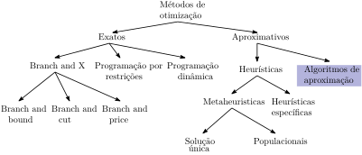
Dentre os algoritmos aproximativos existe uma separação entre as heurísticas e os algoritmos de aproximação.
Métodos de resolução
Algoritmos de aproximação: Em algoritmos de aproximação, existe uma garantia no limitante (bound) da solução encontrada em relação ao ótimo global.
EXEMPLO: O algoritmo de Christofides–Serdyukov para o problema do caixeiro viajante garante que o custo da solução gerada não ultrapassa \(\frac{3}{2}\) do custo da solução ótima. Ou seja, em uma instância em que a rota ótima tem um custo de 10, no pior cenário possível o algoritmo gera uma solução de custo \(\frac{3}{2}\)10 = 15.
Métodos de resolução
Finalmente vamos entender o nome da nossa disciplina!
Introdução
Heuriskein: Antiga palavra de origem Grega com significado “a arte de descobrir novas estratégias (regras) para resolver problemas”.
Meta: O sufixo meta, também de origem grega significa, “metodologia de nível superior” (meta linguagem, metafísica, Meta).
Métodos de resolução
Por exclusão, sabemos que as Heurísticas não garantem o ótimo, e nem mesmo um limitante em relação a solução ótima.
Métodos de resolução
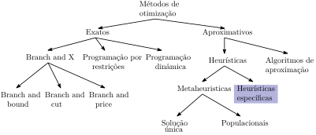
As heurísticas específicas são talhadas para resolver um tipo específico de problema.
Métodos de resolução
EXEMPLO: Um algoritmo de otimização do problema do caixeiro viajante é chamado de 2-OPT. Ele consiste em destruir dois arcos de uma rota e substituir por outros dois arcos, como mostrado na Figura abaixo:
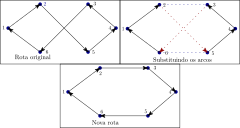
Note que é impossível aplicar um 2-OPT em um problema de carregamento de contêineres, por exemplo. Não faria sentido, de forma que o 2-OPT é uma heurística específica para o TSP.
Métodos de resolução
As Metaheurísticas, por outro lado, são procedimentos que servem para qualquer problema de otimização. Elas “guiam” as heurísticas específicas (Meta-acima).
Métodos de resolução
EXEMPLO: A metaheuristica mais simples é chamada de busca local (local search - LS). Nesse algoritmo, uma melhoria na solução é feita a cada iteração, até que um critério de parada seja satisfeito.
Métodos de resolução
Note que o algoritmo pode ser aplicado para qualquer problema! O que é alterado é o método de alteração de \(s\). No caso do TSP, poderíamos colocar o 2-OPT nesta etapa.
Métodos de resolução
Percebe-se que a Metaheurística age sobre a heurística específica (2-OPT). Se escolhermos outro problema de otimização, o LS poderia ser utilizado, a única coisa que seria diferente é o método de alteração da soluções, que seria uma heurística específica para o outro problema.
Métodos de resolução
As metaheurísticas, por sua vez, podem ser separadas em dois grupos: aquelas que desenvolvem soluções únicas (como o LS), e as que geram mais de uma solução (como algoritmos genéticos).
Atividade
- O que é um problema de otimização? Crie uma instancia pequena (4 itens) para o problema da mochila, e mostre que ele é um problema de otimização.
- Escreva o modelo de programação inteira para o problema de designação visto na última apresentação.
- Resolva o problema usando o software GUSEK, e mostre a solução ótima (designação e custo total).
- O que são algoritmos de força-bruta? Por que não os utilizamos em problemas de otimização?
- Qual a diferença entre algoritmos aproximativos e exatos? E entre heurísticas e algoritmos de aproximação?